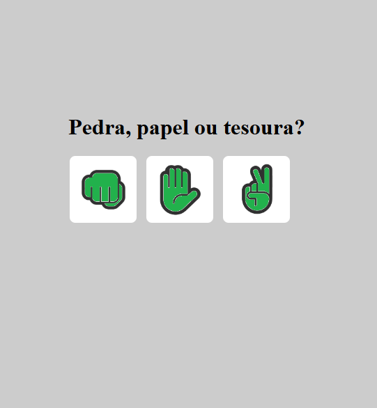

Stock Flow
Aplicativo de controle de estoque com cadastro de produtos, registro de entradas e saídas, gráfico diário de movimentações, geração de PDF com relatórios de produtos, estoques baixos e histórico de movimentações.

Olá! Sou um desenvolvedor de sistemas formado em Análise e Desenvolvimento de Sistemas pela Uninassau, com um foco especial em Java para backend e Flutter para desenvolvimento mobile. Minha jornada acadêmica foi marcada por desafios e mudanças de rumo, que me ajudaram a amadurecer e a descobrir minha verdadeira paixão pela programação.
Inicialmente, eu estava inclinado a seguir uma carreira na área de exatas, com foco em Engenharia Civil. No entanto, ao passar em 7º lugar no SISU de 2019 para Matemática Aplicada e Computacional na UFS, decidi seguir a computação, embora tenha enfrentado um caminho difícil que incluiu a inscrição errada para Engenharia de Pesca e um ano complicado nesse curso. Em 2023, decidi focar completamente na área de tecnologia e me formei em 2024 em ADS.
Embora minha trajetória tenha sido mais longa do que eu esperava, ela me proporcionou a experiência de aprender por conta própria, me esforçando ao máximo para conquistar meus objetivos. Meu maior desafio foi no desenvolvimento de um e-commerce de roupas para um projeto acadêmico, onde, apesar da pressão do grupo e dos professores, tive a oportunidade de aprender muito, especialmente com a parte de backend em Java.
Hoje, estou em busca do meu primeiro emprego na área de programação, e enquanto não encontro a oportunidade certa, continuo aprimorando meus conhecimentos em Java e Flutter. Meu objetivo não é ser famoso, mas sim construir uma carreira sólida e consistente que me permita alcançar o sucesso tanto profissional quanto pessoal.
Sou um solucionador de problemas incansável: começo buscando soluções por conta própria, mas não hesito em recorrer a documentação, vídeos tutoriais ou até mesmo a ajuda de colegas quando necessário. Estou sempre em busca de novas tecnologias e tendências que posso aplicar nos meus projetos para aprimorar meu conhecimento e entregar resultados melhores.
Aplicativo de controle de estoque com cadastro de produtos, registro de entradas e saídas, gráfico diário de movimentações, geração de PDF com relatórios de produtos, estoques baixos e histórico de movimentações.

App para organizar produções audiovisuais. O usuário adiciona, edita, apaga e filtra títulos com informações como tipo, streamings disponíveis e acesso. Os dados são salvos em JSON no dispositivo Android.

Jogo simples de JoKenPo criado para um projeto de aula na faculdade. Ideal para demonstrar conceitos básicos de lógica e interface em aplicações simples.
App de controle de gastos. O usuário adiciona, edita e apaga despesas, atualiza dados e foto de perfil, e filtra gastos por forma de pagamento, data e outros critérios.
Site de e-commerce de roupas. O usuário visualiza produtos, aplica filtros, adiciona ao carrinho, finaliza compras e acompanha os pedidos realizados.
Aplicativo de cardápio digital. O cliente visualiza produtos, adiciona ao carrinho e faz pedidos. O restaurante gerencia o cardápio e acompanha os pedidos.